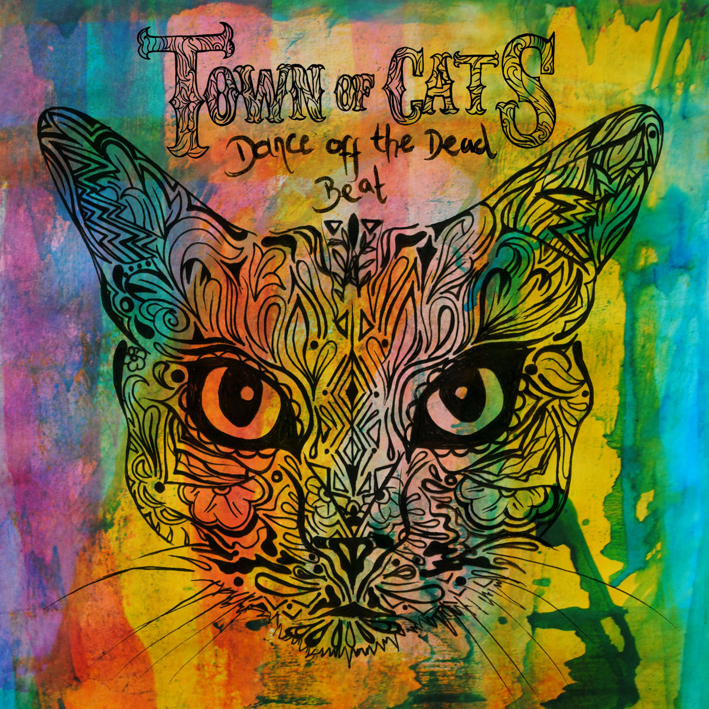
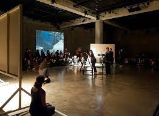

(Current)
 The Acorn Lodge (2023) Ambient Peaks (Album): Composition, performance, recording, production, mixing, mastering.
The Acorn Lodge (2023) Ambient Peaks (Album): Composition, performance, recording, production, mixing, mastering.
 Lu'Ami (2023) New Album (Album): Recording, production, mixing, mastering.
Lu'Ami (2023) New Album (Album): Recording, production, mixing, mastering.
 Anew Colour (2023) Empathy (Album): Composition, performance, recording, production, mixing, mastering.
Anew Colour (2023) Empathy (Album): Composition, performance, recording, production, mixing, mastering.
Anew Colour (2023) Talk to Me (Single): Composition, performance, recording, production, mixing, mastering.
 The Acorn Lodge (2023) Dinky's Tycho (Album): Composition, performance, recording, production, mixing, mastering.
The Acorn Lodge (2023) Dinky's Tycho (Album): Composition, performance, recording, production, mixing, mastering.
(2023)
The Acorn Lodge (2023) Archduke Chocula (live) (Single): Composition, performance, recording, production, mixing, mastering. YouTube
 The Acorn Lodge (2023) Mr Sidechain (Single): Composition, performance, recording, production, mixing, mastering. Bandcamp / Spotify
The Acorn Lodge (2023) Mr Sidechain (Single): Composition, performance, recording, production, mixing, mastering. Bandcamp / Spotify
The Acorn Lodge (2023) Acorn City (live) (Single): Composition, performance, recording, production, mixing, mastering. YouTube
(2022)
 Hanu (2022) Helix (Album): Mastering. Bandcamp
Hanu (2022) Helix (Album): Mastering. Bandcamp
 MP Dilla (2022) Dreams of Gold (Single): Mixing, mastering.
MP Dilla (2022) Dreams of Gold (Single): Mixing, mastering.
(2021)

(2020)

(2019)
(2018)

(2017)
ABRSM/National Youth Choirs Great Britain (2017) New Singing Syllabus Medley: Recording, editing, production, mixing, mastering. YouTube.
Town of Cats (2017) Dance Off the Deadbeat (Single video): Recording, production, mixing. YouTube.
(2016)
Town of Cats (2016) The Demon / Deadzone (Live videos): Recording, mixing, mastering. YouTube.

Town of Cats (2016) Dance Off the Deadbeat (Album): Recording, production, mixing. Bandcamp / Making of blog.

Dead Good Arts (2016) (Music Collective): Live and recorded sound.
Fresh Like Dexie (2016) My Kind of Blue / Occam's Razor (Interlude) (Single): Recording, mixing, mastering. YouTube.
(2015)
 Dead Good Live (2015) (Music Promotion): Live and recorded sound. YouTube.
Dead Good Live (2015) (Music Promotion): Live and recorded sound. YouTube.

Tout Croche (2015) The Whole Shabang (Album) [Kohlenstoff Records / The Silent Howl]: Mixing. Physical / Digital.
(2014 and earlier)

 Otherplace Productions (2014) The Warren: Main House (Brighton Fringe Festival): Technician (sound bias).
Otherplace Productions (2014) The Warren: Main House (Brighton Fringe Festival): Technician (sound bias).

 Tout Croche (2013) Hey Hey, My My (Into the Black) (remix): Performance, recording, production, mixing, mastering. Bandcamp.
Tout Croche (2013) Hey Hey, My My (Into the Black) (remix): Performance, recording, production, mixing, mastering. Bandcamp.
 Tuesday at Four (2013) (Three tracks): Recording, production, mixing, mastering. Soundcloud.
Tuesday at Four (2013) (Three tracks): Recording, production, mixing, mastering. Soundcloud.

Patrick Staff (2012) Chewing Gum for the Social Body (software): Sound application programming. Tate.org.

 (2010-2011) 52 Ghosts (13 EPs): Composition, performance, recording, production, mixing, mastering. Tumblr.
(2010-2011) 52 Ghosts (13 EPs): Composition, performance, recording, production, mixing, mastering. Tumblr.
 Wild Hope (2010) Going Nowhere (remix): Production, mixing, mastering. bandcamp.
Wild Hope (2010) Going Nowhere (remix): Production, mixing, mastering. bandcamp.